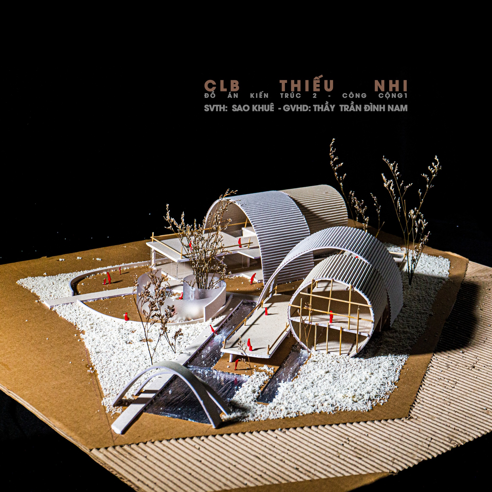
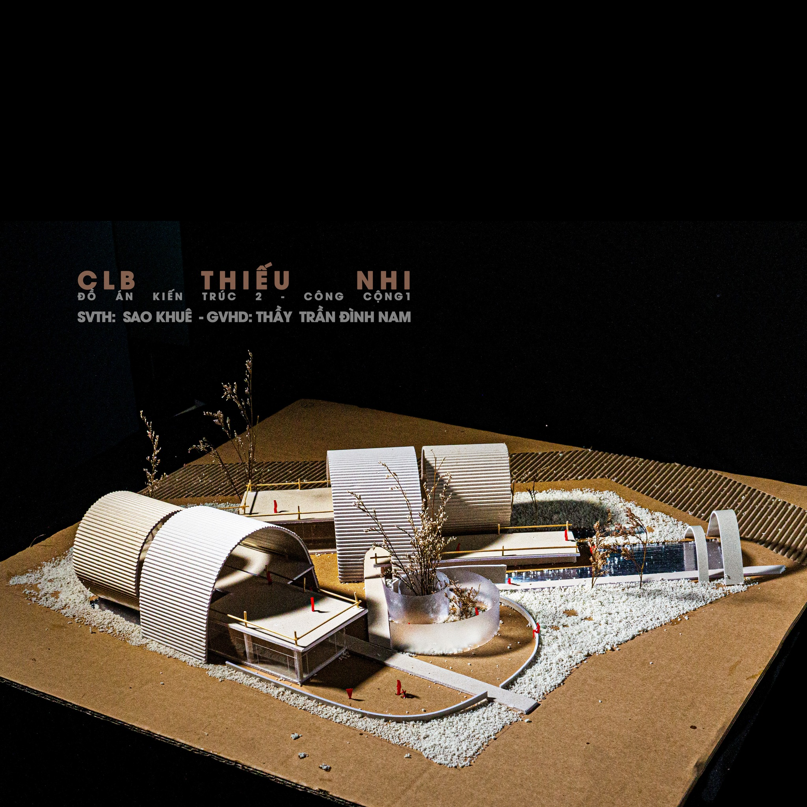
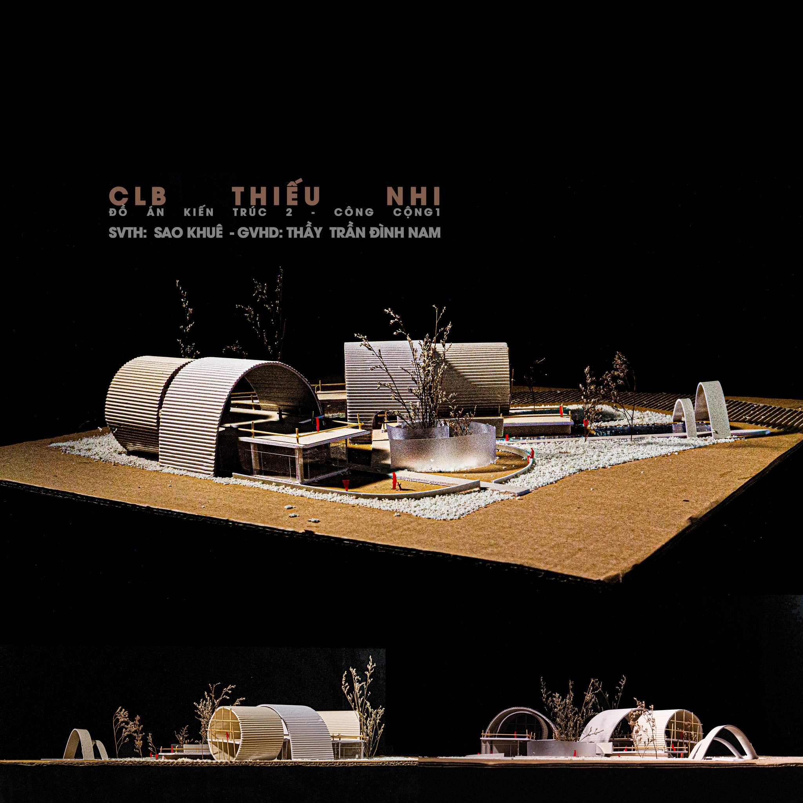

Khám phá nghệ thuật tạo hình thông qua Đồ án CLB Thiếu Nhi của sinh viên UAH. Tác phẩm gây ấn tượng mạnh bởi việc sử dụng những khối hình thức bán trụ mềm mại, vật liệu thô mộc và cách phân bổ không gian tinh tế, tạo ra một khu vực hoạt động cho trẻ nhỏ cực kỳ gần gũi nhưng vẫn đầy tính gợi mở về tư duy kiến trúc.

Phối cảnh diện mạo chính của Câu Lạc Bộ Thiếu Nhi, nổi bật với hệ thống mái vòm gợn
sóng và hồ nước tương phản đầy tĩnh lặng.

Góc nhìn tổng quan khu đất kèm bình đồ mặt bằng phụ giúp hình dung rõ rệt cách phân
bổ các khối chức năng mở ôm trọn vào cảnh quan.

Cận cảnh chi tiết kết cấu khung rỗng bên trong, khoe trọn sự thanh mảnh của hệ đỡ
cũng như tỷ lệ thân thiện, an toàn tuyệt đối với kích thước vận động của trẻ em.

Dưới góc nhìn chéo, các vách ngăn hình bán trụ khéo léo tạo nên một hành trình trải
nghiệm không gian đóng - mở đan xen, khuyến khích sự tò mò và hứng thú của thanh thiếu nhi.